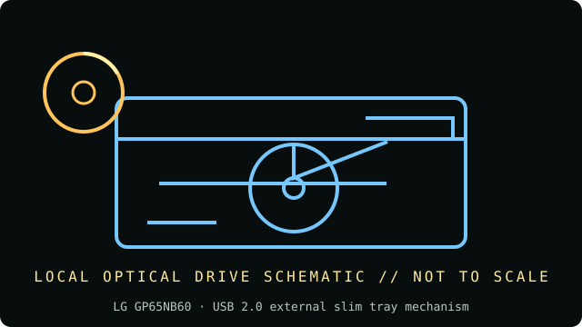

[ INDIVIDUAL COMPONENT // OPTICAL DRIVES ]
LG GP65NB60
Ultra-slim external USB DVD/CD writer. The GP65NB60 is a specific portable SKU and should not be conflated with similar GP65 models. Specifications below are tied to the exact model identifiers and cited documentation; nearby product families may differ.

IDENTIFICATION: LG GP65NB60 · confirm full model/revision marking and compare it with the cited source before assigning a host or media capability.
Verified specifications
| Catalog subcategory | External DVD writers |
|---|---|
| Exact product identifier | LG GP65NB60 |
| Era / product type | External 8× slim DVD writer with M-DISC support |
| Read/write and media | Writes DVD±R up to 8× and CD-R up to 24×; reads DVD-ROM up to 8× and CD-ROM up to 24×; manufacturer lists M-DISC support. |
| Interface and mechanics | USB 2.0 external slim tray mechanism; bus powered; 141 × 14 × 136.5 mm, approx. 200 g. |
| Variant and host cautions | LG specifies USB 2.0; USB 3 ports are compatible but do not turn this into a USB 3 optical mechanism. Check bundled software/OS and exact suffix, and provide a stable port rather than a low-power hub. |
Optical-media preservation notes
M-DISC is a media type, not a guarantee of perpetual readability. Keep separate, verified copies, store discs vertically in cases in a cool/dry location, and retain periodic checksum/readability results.
- Handle discs by the edge or center hub; do not write on the data side or add adhesive labels over the recording surface.
- Store in a clean, cool, dry, dark environment in protective cases. Keep original media unmodified and make verified working images for access.
- Retain checksums, drive model/firmware, software, read errors, media type, and acquisition/handling history with each preservation image.
Identification and host checks
- Confirm the complete manufacturer label, model suffix, revision, serial/date code, and supplied bezel, cable, adapter, or bracket before installation.
- LG specifies USB 2.0; USB 3 ports are compatible but do not turn this into a USB 3 optical mechanism. Check bundled software/OS and exact suffix, and provide a stable port rather than a low-power hub.
- M-DISC is a media type, not a guarantee of perpetual readability. Keep separate, verified copies, store discs vertically in cases in a cool/dry location, and retain periodic checksum/readability results.
Manufacturer, standards and preservation sources
- LG — GP65NB60 portable DVD writer product pageManufacturer product page for exact model: USB 2.0, rated speeds, M-DISC, dimensions and weight.
- LG — GP65NB60 support and manualsManufacturer support/manual entry for the exact portable model.
- NEDCC — Care and handling of CDs and DVDsPreservation handling and storage guidance.
- NIST — Care and handling of CDs and DVDs: Guide for librarians and archivistsPreservation practice for optical discs; follow applicable media-specific guidance and keep redundant verified copies.
- Library of Congress — Sustainability of Digital FormatsFormat-sustainability reference for planning access, preservation, and migration of digital content.
Manufacturer ratings describe supported media and maximum speeds, not guaranteed read quality from a particular aged disc. Standards and preservation guidance do not certify this drive or a media batch.